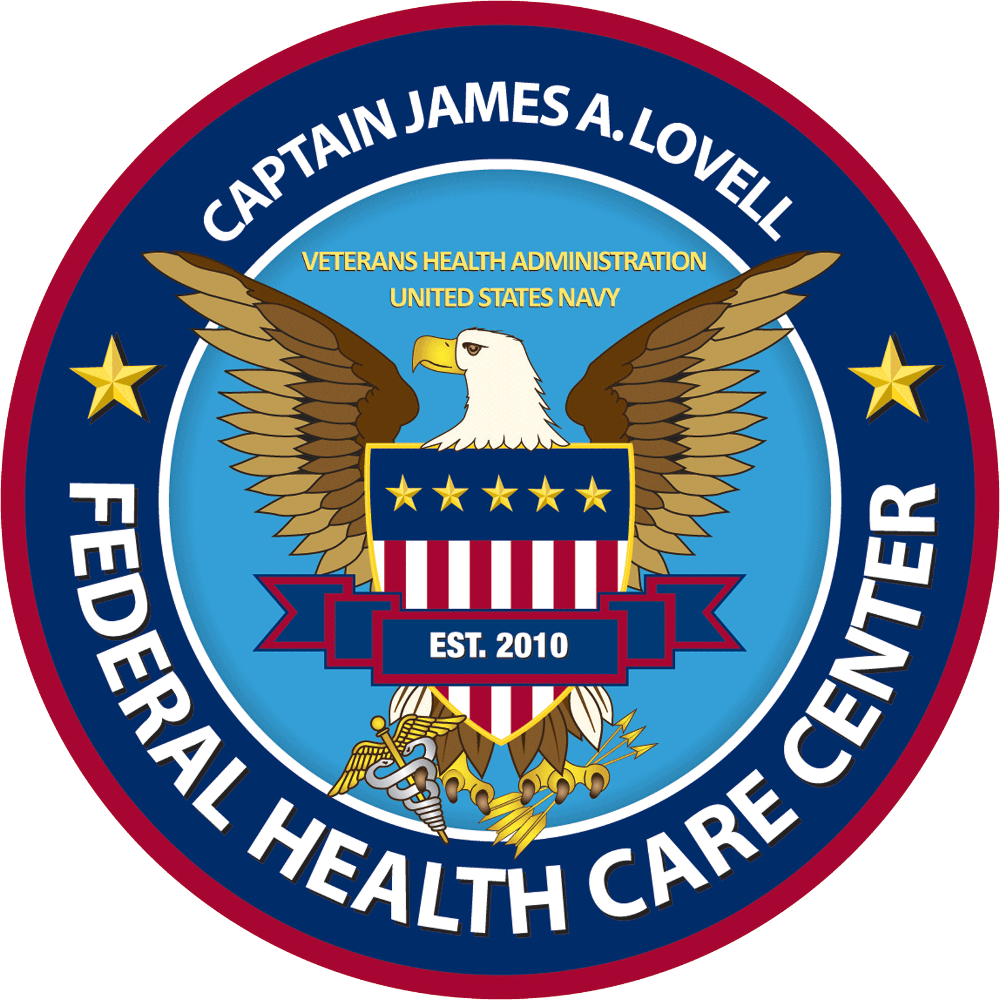

Education
George Washington University
- Master of Science in Information Systems Technology w/ Graduate Certificate in Data Science - Class of 2020
- Bachelor of Business Administration w/ Concentration in Information Systems Technology Management and Minor in Computer Science - Class of 2019
- Associate of Science in Health Science in Medical Laboratory Technology (ASCP certified) - Class of 2013
- Chipola University - Marianna, Florida
- Bicol University Tabaco Campus (Nursing) - Tabaco, Albay, Philippines
- Bicol College High School (Diploma Awarded) - Daraga, Albay, Philippines
- Daraga National High School - Daraga, Albay, Philippines
- Bicol University College of Education Laboratory School - Daraga, Albay, Philippines
- Sunshine International Learning School - Daraga, Albay, Philippines
Career

Medical Laboratory Technology
I also worked as an ASCP Certified Medical Laboratory Technician (MLT) and a Cytologist Assistant in Captain James A. Lovell Federal Health Care Center in Great Lakes, IL from 2012 to 2015.Contributions:
- Developed a system for specimen processing resulting in 1⁄2 time savings
- Created an organized filing system for specimens, slides, and patient’s orders resulting in time savings from days/hours to seconds. This organized system also saved patients from providing additional specimens for workup.
- Made a log of supply inventory for supplies to determine the approximate number of supplies needed to be ordered. This resulted in reduction of the number of expired supplies needed to be thrown away.
- Trained a total of 9 employees to work at different departments of the laboratory. This resulted in flexibility of the employees to work at different areas of the laboratory when needed.

United States Navy Veteran
I decided to join and became a member of The United States Navy as a Hospital Corpsman (NEC: 0000, 8506) for 5 years starting from 2010 to 2015. During that time, I was stationed in Great Lakes Illinois, Fort Sam Houston Texas, and San Diego California.Awards:
- Global War on Terrorism Ribbon
- National Defense Ribbon
- Sharp Shooter Ribbon
- Good Conduct Ribbon